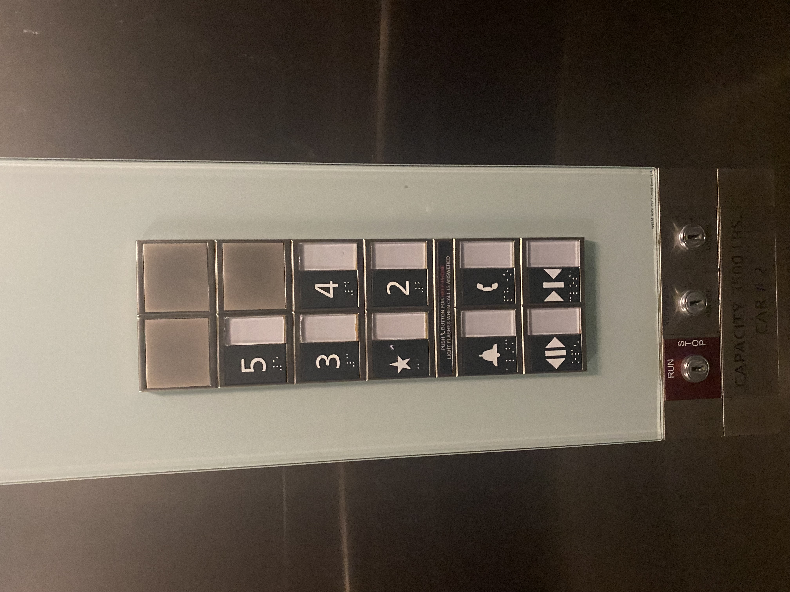
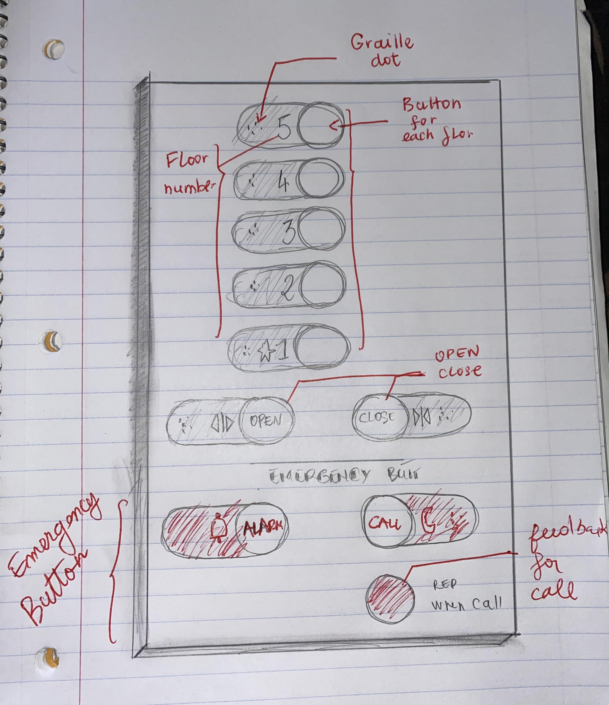

PROJECT 1 : ELEVATOR
PART 1 : FINDING THE ELEVATOR

PART 2 : DESCRIPTION AND IMPROVEMENT OF THE ELEVATOR
DESCRIPTION
- The most common thing that I use in an elevator are the floor button and the open and close button, the emergency button are a rare use for me! this design makes it a bit hard to use those common button than it should be
because the open and close button are in the same section as the emergency button despite having no relation with those button
There is an useless square bloc , and the floor buttons display are a bit difficult to follow as there is only 5 floor
- From a user persperctive the sequences of action would be, get inside the elevator press the floor destination and press close in case there is no one and the user is in an hurry, or press open in case someone wants to get in
- This elevator only has icon to guide tell the elevator how to interact with those button and also some graille dot for the people with disability
- Every button floor will light up everytime they are pressed and turn off whenever the user reach the specific floor as feedback!
the open and close button will provide a visual feedback to the user as they are pressed and they will perform the action of closing and openning the door
- The user could easily misclick and press the emergency button as they are next to the open and close button which are commonly used
- A foreigner can spend a some of time trying to figure out what is the 1st floor because this is a different system in europe and this elevator only have a star to represent the 1st floor.
IMPROVEMENT
- I suggest to reposition the button vertically with each button representing each floor, and make every button round because it will look and feel more like a button
- Suggest to add the number 1 next to the icon star
- Relocate the open and close button in the same section as the floor button because they are both heavily used
- Change the color of the emergency button to red so that the user know that they are emergency
- Add text and instruction for the open, close and emergency
- And a led light that will light up for the call button
Here is the sketching of my proposition

PART 3 : FINAL DESIGN AND IMPLEMENTATION
ALTERNATIVE